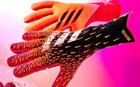
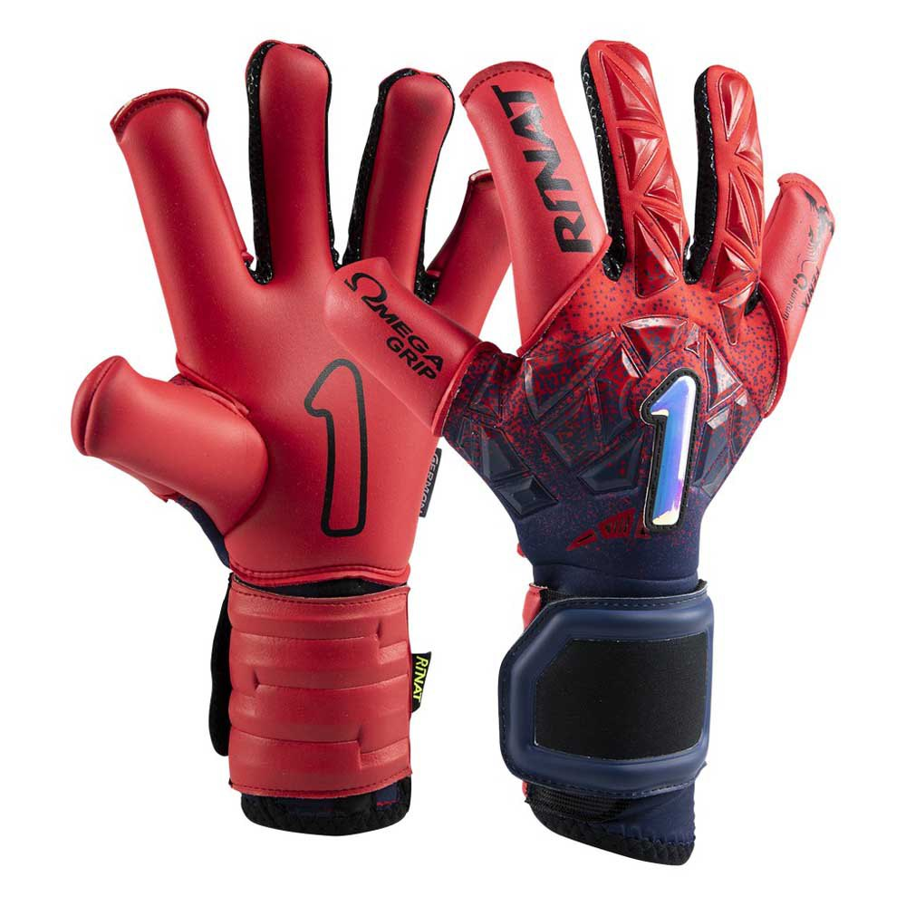

RENEGADE
Página especializada en Guantes de Portero de futbol de todas las tallas que necesites
Compra con las mayores ofertas en guantes y en equipamientos de porteros.
Tenemos varias marcas de guantes:
- SP
- Nike
- Adidas
- Rinat
- Características de Guantes de SP
En una época donde el color invade el diseño de los artículos deportivos, Serendipity es la calma en la tormenta. Con una nueva colección Dark / Light inspirada en la luz y la oscuridad, presenta un diseño limpio, monocolor y con una construcción muy clásica para los porteros que buscan equilibrio en el tipo de guante y huyen de los extremos de armado y ligereza de los guantes de tendencia. El modelo que estás viendo es el DARK, inspirado en la
oscuridad, puedes buscar también la versión LIGHT inspirada en la luz.
-
- Características de Guantes Nike
- El corte Grip3 consigue una sensación única en un guante. Una idea patentada por Nike que, además de estar en el modelo de gama alta, también se puede encontrar en esta gama media con palma Supersoft. Con este
tipo de látex no perdemos apenas agarre y conseguimos aumentar ligeramente la duración.

- Características de Guantes Adidas
- Látex URG 2.0 de alto rendimiento montado en corte negativo sin costuras entre los dedos,La muñequera es una extensión de la palma y el cuerpo del guante. La especial elasticidad del knit hace que no sea necesario tira de cierre.
Guante de competición nivel profesional recomendado para los que quieren un guante minimalista que les ayude a sentir el balón en cada blocaje.

- Características de Guantes Rinat
- Compuesto mixto con Omega Grip de gama alta en las zonas de blocaje y HGP látex de resistencia,Guante para entrenamiento a nivel federado no profesional y La parte frontal es una extensión del dorso y la
trasera es tejido elástico. Tira de cierre de un anclaje con componente elástico.

| adidas |
Nike |
Sp |
| 120€ |
110€ |
99'99€ |